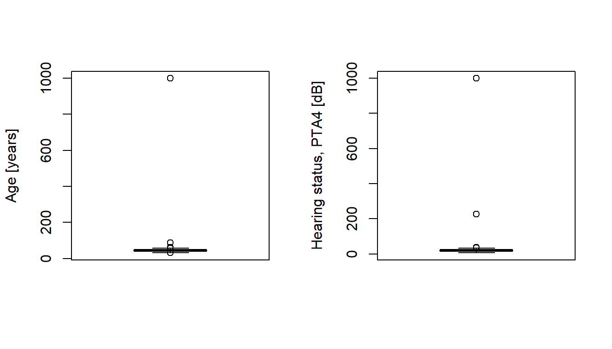
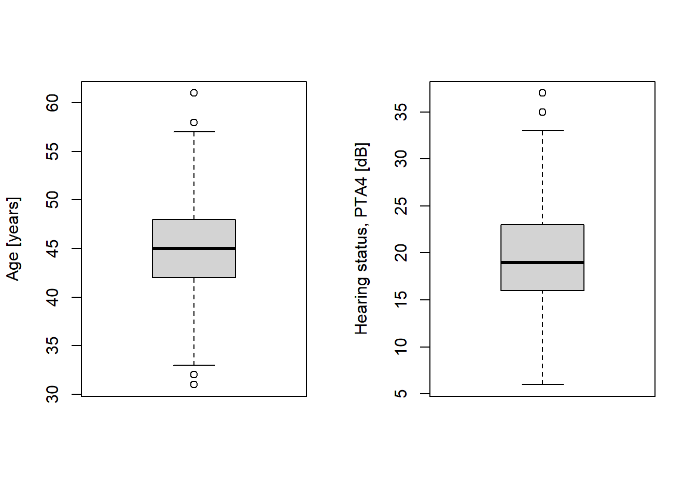
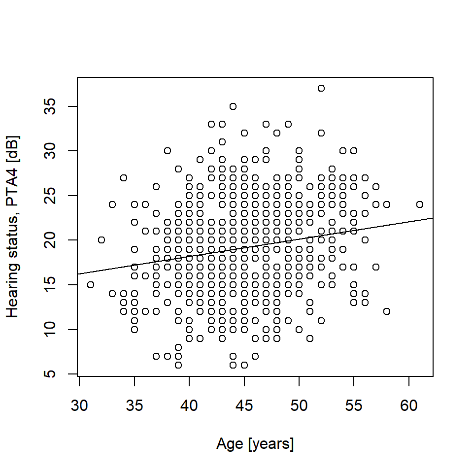
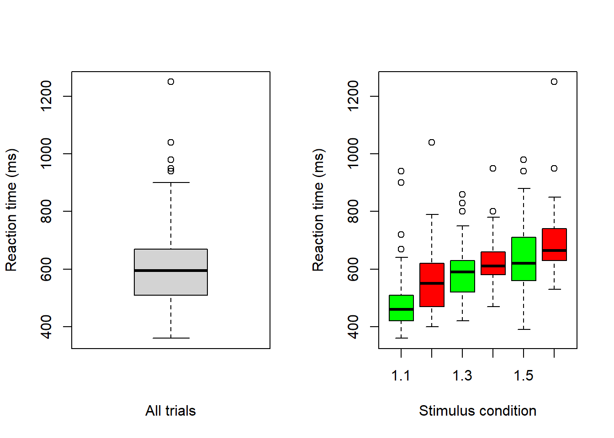
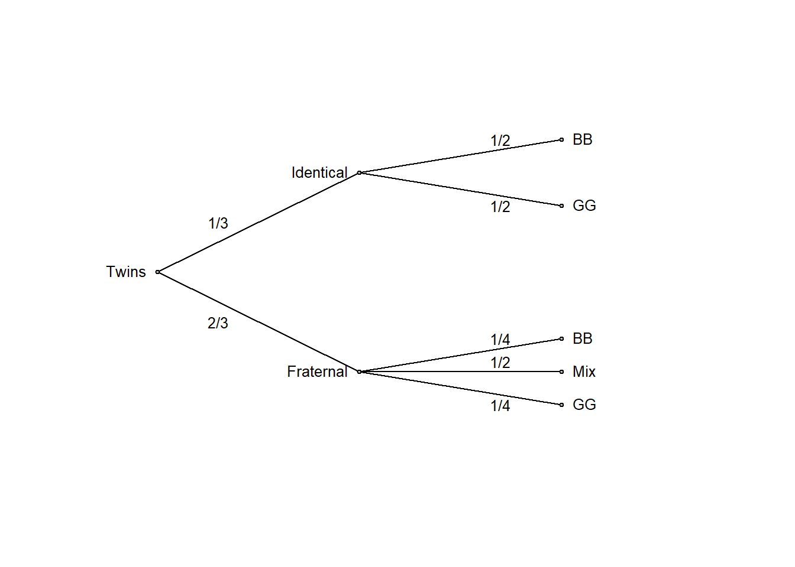
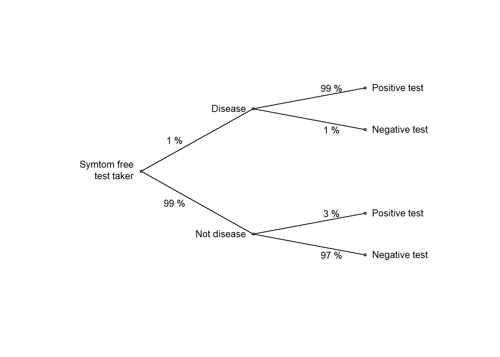
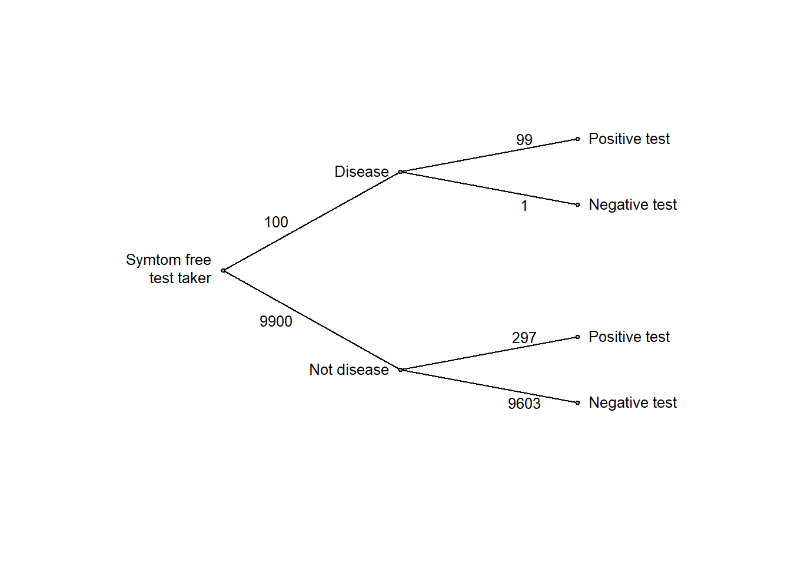

Code
# R implementation of http://www.dagitty.net
library(dagitty) Load R-libraries
# R implementation of http://www.dagitty.net
library(dagitty) head(), tail()str()summary()hist(), boxplot()Readings:
Open science is an umbrella term for a collection of values, practices and movements. The two main principles of Open Science ” are
American Statistical Association endorse the following definitions (Broman et al. (2017)):
Management
Code book
A detailed description of the data set, with information on how to interpret column names. The more information the better (within reason), for example regarding measurement units and codes for missing data (e.g., -999, or NA).
The code book may be given in …
Outlier exclusions, imputation of missing data (never in raw data file)
Definitions of created variables
Data analyses
Figures and tables
DON’T Do things by hand
DON’T Use point-and-click software. Ease of use can lead to non-reproducible analyses
DON’T Save outputs during analysis work. Figures and tables should be defined in scripts and redrawn each analysis session. Save figures and tables only when it is time to publish your work.
To be reproducible in practice (and not only in theory), data files and code scripts have to be easy to understand for everyone, without background knowledge of your study and data. Note: This one may the future you. Therefore, spend time to write nice code:
Popular tools:
I will say this many times: Know your data! Or, as a professor once told me years ago, “You need to be on top of your data.” The very first step to a comprehensive understanding of your data is to screen the data to detect errors.
Let’s create some fake data, with known errors to be detected. It is about hearing status in a sample of industrial workers aged between 20 and 65 years old.
Code book:
# Set seed to make the following reproducible!
set.seed(123)
# Number of participants in the study
n <- 760
# ID-number unique for each participants
id <- 1:n
# Sampling age from normal distributions
age <- rnorm(n, mean = 45, sd = 5)
# Sampling hearing status (pta4 [dB], low values is better) from normal
# and making hearing gets worse with age, about 2 dB per 10 years
pta4 <- rnorm(n, mean = 10, sd = 5) + 0.2*age
# Round to integers to make numbers more realistic
age <- round(age)
pta4 <- round(pta4)
# Add some errors
age[126] <- 999 # ID 126 has age = 999 years
age[231] <- 87 # ID 231 has age = 87 years
pta4[5] <- 227 # ID 5 has pta4 = 227 dB
pta4[543] <- 999 # ID 543 has pta4 = 999 dB
# Make data frame
d <- data.frame(id = id, age = age, pta4 = pta4)
# Remove variables to just keep the data frame
rm(n, id, age, pta4)I stored the fake data in a data frame called d. Please copy the code above,
run it in R and pretend that it’s a real data set imported to R. Let’s start with initial screening of the data frame.
# Initial data screening of our data
head(d) # Shows the first few lines of the data frame id age pta4
1 1 42 21
2 2 44 22
3 3 53 24
4 4 45 11
5 5 46 227
6 6 54 26tail(d) # Shows the last few lines of the data frame id age pta4
755 755 44 17
756 756 44 22
757 757 50 19
758 758 44 22
759 759 35 16
760 760 44 17str(d) # R description of data frame'data.frame': 760 obs. of 3 variables:
$ id : int 1 2 3 4 5 6 7 8 9 10 ...
$ age : num 42 44 53 45 46 54 47 39 42 43 ...
$ pta4: num 21 22 24 11 227 26 26 17 17 26 ...summary(d) # Some basic stats, including information on missing data = NA id age pta4
Min. : 1.0 Min. : 31.00 Min. : 6.00
1st Qu.:190.8 1st Qu.: 42.00 1st Qu.: 16.00
Median :380.5 Median : 45.00 Median : 19.00
Mean :380.5 Mean : 46.38 Mean : 20.73
3rd Qu.:570.2 3rd Qu.: 48.00 3rd Qu.: 23.00
Max. :760.0 Max. :999.00 Max. :999.00 Plots may discover suspicious observations not shown by the screening above:
# Boxplot
par(mfrow = c(1, 2)) # Two plots next to each other
boxplot(d$age, ylab = "Age [years]")
boxplot(d$pta4, ylab = "Hearing status, PTA4 [dB]") 
Find data outside the specified age interval [20, 65], and hearing ability interval [-10, 80]:
# Finding ids with age and hearing status that should not be in the sample
age_out <- d$id[d$age < 20 | d$age > 65 ]
pta4_out <- d$id[d$pta4 < -10 | d$pta4 > 80]
# Print data frame rows with
outrows <- d$id %in% c(age_out, pta4_out) # Find rows with outlier data
d[outrows, ] # Look at data frame for these rows id age pta4
5 5 46 227
126 126 999 21
231 231 87 24
543 543 49 999Fix data (in script, not in raw data file!). You would put code like this at the top of your data analysis script. Note: Advanced users may put it in a separate script that is called by the main analysis script(s).
g <- d # new data frame called g
g$age[age_out] <- NA # Make impossible ages missing data, NA
g$pta4[pta4_out] <- NA # Make impossible hearing-status missing data, NA
# Screen data frame g
str(g)'data.frame': 760 obs. of 3 variables:
$ id : int 1 2 3 4 5 6 7 8 9 10 ...
$ age : num 42 44 53 45 46 54 47 39 42 43 ...
$ pta4: num 21 22 24 11 NA 26 26 17 17 26 ...summary(g) id age pta4
Min. : 1.0 Min. :31.00 Min. : 6.00
1st Qu.:190.8 1st Qu.:42.00 1st Qu.:16.00
Median :380.5 Median :45.00 Median :19.00
Mean :380.5 Mean :45.07 Mean :19.17
3rd Qu.:570.2 3rd Qu.:48.00 3rd Qu.:22.75
Max. :760.0 Max. :61.00 Max. :37.00
NA's :2 NA's :2 # Boxplots again, now without outliers
par(mfrow = c(1, 2)) # Two plots next to each other
boxplot(g$age, ylab = "Age [years]")
boxplot(g$pta4, ylab = "Hearing status, PTA4 [dB]") 
And just for fun, some analysis.
# Visualize result: sScatter plot
plot(g$age, g$pta4, xlab = "Age [years]", ylab = "Hearing status, PTA4 [dB]")
# Linear regression, stored in object mfit, I am using lm() here, later on we
# will use stan_glm() in the rstanarm package
mfit <- lm(pta4 ~ age, data = g)
abline(mfit) # Draw regression line
mfit # Regression equation
Call:
lm(formula = pta4 ~ age, data = g)
Coefficients:
(Intercept) age
10.4119 0.1942 confint(mfit) # Confidence intervals around estimates 2.5 % 97.5 %
(Intercept) 7.1094563 13.7142545
age 0.1213409 0.2670488Here is data from Table 2.1 in Howell (2012).
The data is from a reaction-time experiment with one participant (Howell). The participant was first presented with a list of digits for a few seconds, e.g.,
1, 5, 7
After the list had been removed, Howell was shown a single digit, e.g.,
2
and was asked to determine whether the single digit was on the previously shown list (in the example above, correct answer would be No).
Code book:
Note that the data only contain trials in which the answer given was correct,
Follow this link to find data Save (Ctrl+S on a pc) to download as text file. You may also download it from Athena.
Download the file and make sure it is in the same folder as your current R-session. To check from where R is working, run getwd() in the Console. Use setwd(dir) to change the directory of the current session, where dir is a character string. Example setwd("C:/Users/MATNI/Documents/Stat1") would set R to work in folder Stat1 on my computer. You may also store your raw data file in a subfolder (generally a good idea), and then import the file from this subfolder. This is what I did in the code below.
# I have chosen to store the data in a subfolder called
# "datasets" located in the directory from which R is working
# Import data file rt_howell.txt, located in subfolder .datasets/
d <- read.table("./datasets/rt_howell.txt", header = TRUE, sep = ",")head(d) trial nstim yesno rt
1 1 1 1 400
2 2 1 1 410
3 3 1 1 470
4 4 1 1 380
5 5 1 1 400
6 6 1 1 370str(d)'data.frame': 300 obs. of 4 variables:
$ trial: int 1 2 3 4 5 6 7 8 9 10 ...
$ nstim: int 1 1 1 1 1 1 1 1 1 1 ...
$ yesno: int 1 1 1 1 1 1 1 1 1 1 ...
$ rt : int 400 410 470 380 400 370 380 470 450 610 ...summary(d) trial nstim yesno rt
Min. : 1.00 Min. :1 Min. :1.0 Min. : 360.0
1st Qu.: 75.75 1st Qu.:1 1st Qu.:1.0 1st Qu.: 510.0
Median :150.50 Median :3 Median :1.5 Median : 595.0
Mean :150.50 Mean :3 Mean :1.5 Mean : 602.6
3rd Qu.:225.25 3rd Qu.:5 3rd Qu.:2.0 3rd Qu.: 670.0
Max. :300.00 Max. :5 Max. :2.0 Max. :1250.0 Check number of trials per condition, this should be a balanced design. Here a cross-tabualtion of number of stimuli (nstim) and whether target was present or not (yesno).
table(d$nstim, d$yesno)
1 2
1 50 50
3 50 50
5 50 50Box plots
Use box plots to inspect data
# Boxplot (there are many ways to make nicer boxplots)
par(mfrow = c(1, 2)) # Two plots next to each other
# Reaction time, all data
boxplot(d$rt, xlab = "All trials", ylab = "Reaction time (ms)")
# Reaction time, per condition
boxplot(d$rt ~ d$yesno + d$nstim, col = c('green', 'red'),
xlab = "Stimulus condition", ylab = "Reaction time (ms)")
Note that there are less boxplot-defined outliers in the figure with all data (left) than in the one with boxplots per stimulus condition (right). In general, if you plan to do grouped analyses, then you should inspect the data per group (condition).
Let’s start with this old exam question:
A women is pregnant with twins, and her doctor tells her that about one third of twin births are identical and the remaining two thirds are fraternal. On the next visit to the doctor, the sonogram shows that she is pregnant with twin boys. Her doctor tells her that about half identical twins are twin boys and the other half are twin girls, whereas for fraternal twins about one quarter are twin boys, one quarter are twin girls, and the rest are one of each sex. How should she update her belief in identical versus fraternal twins given this information?
Old Stat1 exam question
Whenever possible, drawing a probability tree can effectively summarize the information provided in the question
# Function to draw probability tree (my apologize for clumsy code)
ptree <- function(edgevalues) {
plot(NA, xlim = c(20, 95), ylim = c(0, 100), axes = FALSE,
xlab = "", ylab = "")
xpoints <- c(25, 50, 50, 75, 75, 75, 75, 75)
ypoints <- c(50, 80, 20, 90, 70, 30, 20, 10)
cex = 0.8
lines(c(25, 50), c(50, 80))
lines(c(50, 75), c(80, 90))
lines(c(50, 75), c(80, 70))
lines(c(25, 50), c(50, 20))
lines(c(50, 75), c(20, 30))
lines(c(50, 75), c(20, 20))
lines(c(50, 75), c(20, 10))
text(x = 25, y = 50, "Twins", pos = 2, cex = cex)
text(x = 50, y = 80, "Identical", pos = 2, cex = cex)
text(x = 50, y = 20, "Fraternal", pos = 2, cex = cex)
text(x = 75, y = 90, "BB", pos = 4, cex = cex)
text(x = 75, y = 70, "GG", pos = 4, cex = cex)
text(x = 75, y = 30, "BB", pos = 4, cex = cex)
text(x = 75, y = 20, "Mix", pos = 4, cex = cex)
text(x = 75, y = 10, "GG", pos = 4, cex = cex)
text(x = 32.5, y = 65, edgevalues[1], cex = cex)
text(x = 32.5, y = 35, edgevalues[2], cex = cex)
text(x = 67.5, y = 90, edgevalues[3], cex = cex)
text(x = 67.5, y = 70, edgevalues[4], cex = cex)
text(x = 67.5, y = 30, edgevalues[5], cex = cex)
text(x = 67.5, y = 23, edgevalues[6], cex = cex)
text(x = 67.5, y = 10, edgevalues[7], cex = cex)
points(xpoints, ypoints, pch = 21, bg = "grey", cex = 0.5)
}
edgeprob <- c("1/3", "2/3", "1/2", "1/2", "1/4", "1/2", "1/4")
ptree(edgevalues = edgeprob)
It is often easier to think clearly by replacing probabilities with frequencies. So, let’s consider a large number, such as 600 twin births:
edgefreq <- c(200, 400, 100, 100, 100, 200, 100)
ptree(edgevalues = edgefreq)or in table format:
| BB | Mix | GG | Marginal | |
|---|---|---|---|---|
| Identical | 100 | 0 | 100 | 200 |
| Fraternal | 100 | 200 | 100 | 400 |
| Marginal | 200 | 200 | 200 | 600 |
Now it is clear that the initial belief of fraternal twins being twice as likely as identical twins (2/3 versus 1/3 probability, that is, an odds of 2:1 in favor of fraternal twins) should be revised in view of the data. Among twin boys (BB), half are identical and half fraternal, so both outcomes are equally likely (an odds of 1:1). This is simple logic, made transparent by transforming the problem to frequencies and summarizing the result in a probability tree or a table as above. It also follows from Bayes’ rule (discussed in more detail in chapter 6 of these notes).
Probability
There are different perspectives on the meaning of “probability”. Frequentists view probability as a long-run frequency, whereas Bayesians view it as a measure of uncertainty. Luckily, the math is the same no matter how probability is defined, so pragmatically we may leave it to the philosophers of probability to sort out what they really mean. We may avoid the whole problem by just stating that probability is a function that takes an outcome as input and spits out a value between 0 (impossible) and 1 (certain) in accordance with the sum rule described below (these conditions, stated much more rigorously, are known as the axioms of probability).
The Bayesian view fits nicely with the example above: The woman’s initial (prior) belief is 2/3 to 1/3 in favor of fraternal over identical twins. Objectively, she either has identical or fraternal twins, it is just that she is uncertain of which. Once she has given birth, she will know for certain, with probability 1 for fraternal and 0 for identical, or vice versa.
Probability notation
See Probability 2 (ch. 4), for the distinction between probability and density. We will use \(p()\) for density, and \(Pr()\) for probabilities.
Conditional probability
Definition: \(Pr(B|A) = Pr(A \ and \ B)/Pr(A), \ \ \ \ Pr(A) > 0\)
In words, the probability that B will happen if A has happened. Example, the probability that someone will be diagnosed with lung cancer in the next 10 years (B), given that he or she is a heavy smoker (A).
The Product rule
\(Pr(A \ and \ B) = Pr(A)Pr(B|A) = Pr(B)Pr(A|B), \ \ \ \ Pr(A) > 0, \ Pr(B) > 0\)
Independence
If A and B are independent, then:
The latter equation is often taken as the definition of independence.
The Sum rule
\(Pr(A \ or \ B) = Pr(A) + Pr(B) - Pr(A \ and \ B)\)
Special case, A and B are disjoint, i.e., \(Pr(A \ and \ B) = 0\):
\(Pr(A \ or \ B) = Pr(A) + Pr(B)\)
Marginal probability
The term marginal probability might sound complex, but it’s actually straightforward. It’s simply the probability of a particular event, without considering the level of other variables. This concept follows from the sum rule: for discrete variables, the marginal probability is the sum of relevant joint probabilities,
and it’s often displayed in the “margins” of probability tables, as seen below.
Twin births and sex. Note that entries are joint probabilities, for example the upper left is \(Pr(BB \ \& \ Identical) = 1/6\).
| BB | Mix | GG | Marginal | |
|---|---|---|---|---|
| Identical | 1/6 | 0 | 1/6 | 1/3 |
| Fraternal | 1/6 | 2/6 | 1/6 | 2/3 |
| Marginal | 1/3 | 1/3 | 1/3 | 1 |
H: Type of twin birth (Identical, Fraternal); D: Sex composition (BB, Mix, GG)
\(Pr(H = Fraternal) = 1/6 + 2/6 + 1/6 = 2/3\)
\(Pr(D = BB) = 1/6 + 1/6 = 1/3\)
Base-rate neglect: Ignoring or undervaluing the prior probability of an event (the base rate) when evaluating the probability of an event in light of data.
Prosecutor’s fallacy: A logical error that occurs when the probability of hypothesis given the data, \(Pr(H|D)\), is confused with the probability of data given hypothesis , \(Pr(D|H)\).
This old exam question will illustrate both phenomena:
For symptom-free women age 40 to 50 who participate in screening using mammography, the following information is available:
Imagine a woman (40-50 years with no symptoms) who has a positive mammogram. What is the probability that she actually has breast cancer?
Old Stat1 exam question
The test (mammography) is very accurate:
Given the high accuracy of test, it seem natural to interpret a positive test as disease with high probability. And indeed, most people will answer the question above with a high probability, well above 50 %. But high test accuracy (high sensitivity and specificity) is not enough, we should also consider the prior probability (or base rate or prevalence) of diseases, in this example it is low (1 %). Base rate neglect is the tendency to ignore the prior probability when updating beliefs in light of data (in this example, the data is a positive test).
# Function to draw probability tree (my apologize for clumsy code)
ptree2 <- function(edgevalues) {
plot(NA, xlim = c(10, 95), ylim = c(0, 100), axes = FALSE,
xlab = "", ylab = "")
xpoints <- c(25, 50, 50, 75, 75, 75, 75)
ypoints <- c(50, 80, 20, 90, 70, 30, 10)
cex = 0.8
lines(c(25, 50), c(50, 80))
lines(c(50, 75), c(80, 90))
lines(c(50, 75), c(80, 70))
lines(c(25, 50), c(50, 20))
lines(c(50, 75), c(20, 30))
lines(c(50, 75), c(20, 10))
text(x = 25, y = 50, "Symtom free\ntest taker", pos = 2, cex = cex)
text(x = 50, y = 80, "Disease", pos = 2, cex = cex)
text(x = 50, y = 20, "Not disease", pos = 2, cex = cex)
text(x = 75, y = 90, "Positive test", pos = 4, cex = cex)
text(x = 75, y = 70, "Negative test", pos = 4, cex = cex)
text(x = 75, y = 30, "Positive test", pos = 4, cex = cex)
text(x = 75, y = 10, "Negative test", pos = 4, cex = cex)
text(x = 32.5, y = 65, edgevalues[1], cex = cex)
text(x = 32.5, y = 35, edgevalues[2], cex = cex)
text(x = 67.5, y = 90, edgevalues[3], cex = cex)
text(x = 67.5, y = 70, edgevalues[4], cex = cex)
text(x = 67.5, y = 30, edgevalues[5], cex = cex)
text(x = 67.5, y = 10, edgevalues[6], cex = cex)
points(xpoints, ypoints, pch = 21, bg = "grey", cex = 0.5)
}
edgeprob <- c("1 %", "99 %", "99 %", "1 %", "3 %", "97 %")
ptree2(edgevalues = edgeprob)
Again, it is much easier to think clearly if we replace probabilities with frequencies, so let’s think of a large number, say 10,000 test takers:
edgefreq <- c(100, 9900, 99, 1, 9900*.03, 9900*.97)
ptree2(edgevalues = edgefreq)
or in table format:
| Positive test | Negative test | Marginal | |
|---|---|---|---|
| Cancer | 99 | 1 | 100 |
| Not cancer | 297 | 9603 | 9900 |
| Marginal | 396 | 9604 | 10000 |
From the frequencies above, we see that among the 396 with a positive test, only 99 have cancer, corresponding to a 25 % probability of disease given the positive test.
This is an informal application of Bayes’ rule, to be discussed in greater detail in chapter 6 of these notes.
Dichotomous significance testing encourages base-rate neglect and the prosecutor’s fallacy! This is a psychological argument against using it (for more reasons, see Amrhein et al. (2019) and Gelman et al. (2021)). Let’s walk through a null-hypothesis significance test (NHST) with \(\alpha = 0.05\):
It is very tempting to go from a small p-value to the conclusion that “\(H_0\) is probably false”, but this is a logical fallacy induced by the human tendency to neglect the prior probability, base rate neglect, and confuse what we want to assess, \(Pr(D|H)\), with what we have \(Pr(H|D)\), prosecutor’s fallacy. In this example, even with a significant p-value, \(H_0\) remains three times more probable than \(H_1\): \(Pr(H_0|D) = 0.75\) vs.\(Pr(H_1|D) = 0.25\).
The practice problems are categorized as Easy (E), Medium (M), and Hard (H). Credit goes to Richard McElreath and his excellent book, “Statistical Rethinking” (2020), from which I adapted this layout of practice problems.
2E1. Describe the two main principles of Open Science.
2E2. What is a code book?
2E3. ometimes the code book is included in the raw data file, often in the first few lines. Why might this be a good practice?
2E4. When we create new variables from those in the raw data file, should these new variables be added to the raw data file? Why or why not?
2E5. Given the information on the twin birth problem stated above: Think of a random twin birth, and estimate these probabilities:
Footnote: We are assuming twin births, so we don’t need to specify that we are conditioning on twin births. Thus, \(Pr(BB)\) is a short cut for \(Pr(BB|twins)\) which is short cut for \(Pr(BB|twins, human \ birth)\), etc. Probabilities are always conditional on the implicit assumptions we make when estimating them.
2M1. What is the definition of an outlier according to a boxplot?
2M2. (a) Describe a scenario where it would be appropriate to exclude an observation classified as an outlier based on the boxplot rule.
(b) Describe a scenario where you would choose not to exclude such an observation.
2M3. When analyzing data from distinct groups (e.g., experimental conditions), why may it be beneficial to perform data screening for each group separately rather than on the combined data?
2M4. Here is a medical-test problem similar in structure to the example discussed above, but involving a much rarer disease and a more accurate screening test.
For a symptom-free individual who participate in screening for a rare disease, the following information is available:
Mr X is a symptom-free individual and has tested positive.
Calculate:
where \(H_0\): “Mr X does not have the disease” and \(H_1\): “Mr X has the disease”, and \(D\) is the data = a positive test.
Of course, in this problem, you don’t need to calculate both probabilities, since \(P(H_1|D) = 1 - P(H_0|D)\) and \(P(H_0|D) = 1-P(H_1|D)\). However, it’s always a good practice to compute both as a sanity check.
2H1. Revisit the reaction time data from Howell and create boxplots using both ungrouped and grouped data. This time, use the logarithm of the reaction time instead of the untransformed reaction time. Comment on boxplot-defined outliers in your plots compared to those with untransformed reaction times.
2H2. Extract the five summary statistics from the ungrouped boxplot in 2H1, representing log-transformed reaction times. Take the anti-log of each statistic, then compare these values with the summary statistics of the boxplot for untransformed reaction times. All but one statistic match-identify which one differs and explain why.
Hint: When drawing a boxplot, save it as an R object, e.g., mybox <- boxplot(x), and then check it’s content str(mybox).
2H3. Your friend rolls a fair six-sided die and secretly records the outcome; this number becomes the target T. You then put on a blindfold and roll the same six-sided die five times. You’re unable to see how it lands so, each time, your friend (under the watchful eye of a judge, to prevent any cheating) tells you only whether the number you just rolled was greater than, equal to, or less than T. Here is the results, with G, E, L representing a greater, equal or lesser roll:
G, G, L, E, G
Estimate the probability of each of the possible values of T (1, 2, …, 6) given this data, and explain the logic behind your estimation strategy.
Footnote: The problem is taken from the book “Bernoulli’s fallacy” (Clayton (2021)) as a simplified version of the problem that Thomas Bayes used for illustrating the application of his rule.
sessionInfo()R version 4.4.2 (2024-10-31 ucrt)
Platform: x86_64-w64-mingw32/x64
Running under: Windows 11 x64 (build 26100)
Matrix products: default
locale:
[1] LC_COLLATE=Swedish_Sweden.utf8 LC_CTYPE=Swedish_Sweden.utf8
[3] LC_MONETARY=Swedish_Sweden.utf8 LC_NUMERIC=C
[5] LC_TIME=Swedish_Sweden.utf8
time zone: Europe/Stockholm
tzcode source: internal
attached base packages:
[1] stats graphics grDevices utils datasets methods base
other attached packages:
[1] dagitty_0.3-4
loaded via a namespace (and not attached):
[1] digest_0.6.37 fastmap_1.2.0 xfun_0.52 knitr_1.50
[5] htmltools_0.5.8.1 rmarkdown_2.29 cli_3.6.5 compiler_4.4.2
[9] boot_1.3-31 rstudioapi_0.17.1 tools_4.4.2 curl_6.4.0
[13] evaluate_1.0.3 Rcpp_1.0.14 rlang_1.1.6 jsonlite_2.0.0
[17] V8_6.0.4 htmlwidgets_1.6.4 MASS_7.3-61